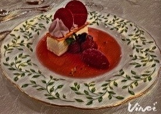

ご列席いただきありがとうございます
本日という日を皆様と迎えることができ
私たちはとても幸せです
本日より皆様の家族として
お迎えいただければ幸いです
このページの最下部に
Lineグループへご参加が可能な
リンクをご用意していますので
ぜひ最後までお読みください
挙式の方法について
キリスト教式
神父または牧師の前で愛を誓います
通常結婚式と聞いて
イメージするのは 大抵
「教会式」と呼ばれるものです
日本でここまで定着したのは
松田聖子さんの結婚式からだそうです
人前式
皆様の前で愛を誓います
披露宴会場内でも実施できるため
会場移動がなく内容にも制限の少ない
この方法が私たちにピッタリだと思い
この方法を選びました
神道式
八百万の神の前で愛を誓います
和装での婚姻はこちらの方法が主です
現在の形での神道式は
大正天皇のご成婚が
最初といわれています
本日のスケジュール

本日のお料理
アントレ[前菜1] ~ Entrées ~
ボタン海老のマシュマロ
Guimauve au crevette
白ワインとゆずでできたマシュマロにボタン海老を包み
ピスタチオとエディブルフラワー（食用花）を添えた一品
刺さっているピックを使って手でもいただけます
アペリティフ[前菜2] ~ Apéritifs ~
フォアグラと魚介のマルブレ
オリーブとルッコラのソース
Marbre au foie gras et Poisson,
Sauce aux olives et roquette
フォアグラと魚介を大理石に見立てたものです
フォアグラのパート 魚介のパートで2度楽しめます
ソースありなしでも味の変化を楽しめます
スープ ~ Soupe ~
海の幸のスープ カプチーノ風
Soupe de poisson à la cappuccino
魚介の旨味がぎゅっと凝縮された一品
一気に飲んでしまうのがもったいないくらいです
スプーンで大事に飲むのもよし
カプチーノのように飲んでもよし
お好みに合わせてお楽しみください
海鮮 ~ Fruits de mer ~
オマール海老のフリカッセ
Fricassée de hommard
オマール海老ブイヨンをたっぷり使用した煮込み料理です
春巻きの皮を揚げた器がサクサクなので
味も食感もとってもお楽しみいただけます
お肉料理 ~ Viande ~
牛フィレ肉のトリュフバター焼き
野菜のブーケを添えて
Filet de bœuf rôti au beurre de truffe
柔らかなお肉にトリュフの香りが効いた
とっても美味しい一品です
デザート ~ Dessert ~
フロマージュのムース
シャンティイ フリュイ
フランボワーズのソルベ
Mousse fromage à la chantilly fruits,
sorbet aux framboises
コースの最後はチーズのムースと
フランボワーズのシャーベットです
ムースにはフランス シャンティ城が
起源のクリームが乗っています
おいしくてすぐ食べ終わってしまうかも・・・？
パン・食後のお飲み物
~ Pain et café ~

メゾンカイザーのパン & エシレバター
コーヒー
Pain de la Maison Kayser,
Beurre d'Echire et café
天然酵母を使用した焼き立てパンです。
料理と合わせて食べると幸せな気持ちになれます
三つ星レストランでも愛用されている
フランス中西部エシレ村で作られる
エシレバターをつけてお召し上がりください
※アレルギーを事前にお伺いした方々には
メニューを一部変更してご案内していますので
安心してお召し上がりください
ドリンクメニュー
ビール ~ Beer ~
アサヒスーパードライ
Asahi Super Dry
アサヒドライゼロ (0.0%)
Asahi Dry Zero
ワイン ~ Wine ~
シャトー ピレ ブラン（白）
Château pilet blanc
ラ クロワザード レゼルヴ カベルネ・シラー (赤)
La Croisade Réserve Cabernet-Syrah
ウィスキー ~ Wisky ~
ネヴィス・デュー
Nevis Dew
[ロック・ストレート・水割り・ソーダ割り]
カクテル ~ Cocktails ~
ジントニック
Gin and Tonic
カシスオレンジ
Cassis Orange
スクリュードライバー
Screw Driver
カンパリ・ソーダ
Campari and Soda
日本酒 ~ Japanese Sake ~
松竹梅
ShoChikuBai
玉乃光（吟醸）
Tama No Hikari[Ginjo]
焼酎 ~ Shochu ~
白水（麦）
Hakusui[Barley]
桜島（芋）
Sakurajima[Potato]
ソフトドリンク ~ Soft Drinks ~
お茶 : ウーロン茶
Oolong Tea
ジュース：オレンジジュース、アップルジュース
グレープフルーツジュース、トマトジュース
Orange juice,Apple Juice,
Grapefruit Juice, Tomato Juice
ソーダ : コカ・コーラ、ジンジャエール
Coca Cola, Ginger Ale
Lineグループに
写真アルバムがございます
プロの撮った前撮り写真、自分たちで撮影した
前撮り写真をアルバムに格納しています
結婚式の写真や動画を順次格納しますので
ぜひ以下ご確認ください
皆様の撮影された写真や動画も
積極的にご投稿ください